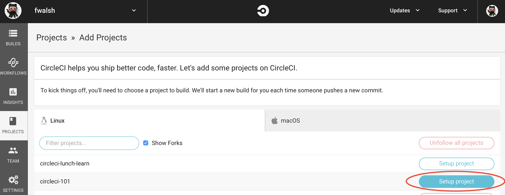

Grails on Circle CI Basics
In this guide, we will learn how to setup Circle CI to build and test a Grails application.
Authors: Nirav Assar, Sergio del Amo
Grails Version: 4
1 Grails Training
2 Getting Started
Every software project needs Continuous Integration (CI).
Continuous integration is a software development strategy that increases the speed of development while ensuring the quality of the code. Developers continually commit small increments of code (at least daily, or even several times a day), which is then automatically built and tested before it is merged with the shared repository.
Circle CI is a continuous integration platform seamlessly integrated with GitHub. It supports your development process by automatically building, testing and deploying code changes.
In this guide you are going to create a Grails application on GitHub and use Circle CI to build and test your code. This guide assumes you are familiar with Git and GitHub. It also assumes that you already have a GitHub account. The guide will cover only build and test an Grails application with Circle CI. However, Circle CI has the ability to deploy, send notifications, and highly customize CI jobs.
Circle has one free plan for any project, and has progressively more costly plans for higher needs. Thus, it is really convenient to build and test an open source Grails Plugin which you may wish to contribute to the community.
2.1 What you will need
2.2 How to complete the guide
3 Writing the Application
The initial project contains a Grails Application created with the web profile.
You `build.gradle`file should look like:
link:../snippets/gradle.properties[role=include]buildscript {
...
dependencies {
...
link:../snippets/build.gradle[role=include]
}
}
...
...
...
link:../snippets/build.gradle[role=include]
...
...
...
dependencies {
...
...
link:../snippets/build.gradle[role=include]
}
link:../snippets/build.gradle[role=include]| 1 | Apply the Webdriver binaries Gradle Plugin. A Gradle plugin that downloads WebDriver binaries specific to the operating system the build runs on. The plugin also as configures various parts of the build to use the downloaded binaries. |
| 2 | Include a testCompile dependency to the Geb Grails plugin which has a transitive dependency to geb-spock. |
| 3 | Adds the necessary selenium dependencies to use Chrome |
| 4 | Adds the necessary selenium dependencies to use Firefox |
| 5 | Geb is built on top of WebDriver. You need these testCompile dependencies. |
| 6 | Configures the ChromeDriver version to be used by the Webdriver binaries Gradle Plugin. |
| 7 | Configures the GeckoDriver version (e.g. Firefox) to be used by the Webdriver binaries Gradle Plugin. |
3.1 Unit Test
The initial application contains a unit test which verifies the default UrlMapping for /.
link:../snippets/src/test/groovy/example/grails/UrlMappingsSpec.groovy[role=include]3.2 Integration Test
The initial application contains a functional test which uses Geb to verify that the Home Page
displays the sentence Welcome to Grails.
link:../snippets/src/integration-test/groovy/example/grails/DefaultHomePageSpec.groovy[role=include]| 1 | Ignore test unless system property geb.env is present. |
3.3 Verbose Test Output
When running the tests in a continuous integration server is useful to have a more verbose output.
Modify build.gradle:
tasks.withType(Test) {
link:../snippets/build.gradle[role=include]
}When we execute the tests we will see output such as:
$ ./gradlew test
....
...
example.grails.UrlMappingsSpec > test forward mappings PASSED3.4 Run Tests
Verify everything executes correctly up to this point.
./gradlew -Dgeb.env=chromeHeadless check.
{commondir}/common-testApp.adoc
4 Create GitHub Repo
We will need to place the Grails application on GitHub so that Circle CI can access it.
Proceed to GitHub and follow the directions to create a new repository.
| When creating the repo, make it public. Option not to create a LICENSE and .gitignore. We are importing an existing code base so we want to avoid conflicts. |
Import the code into the repo on GitHub by executing the following commands:
> git init
> git add .
> git commit -m "first commit"
> git remote add origin <Your repo URL>
> git push -u origin master5 Integrate Circle CI
Circle CI integrates directly with your GitHub account. Follow the directions on the Circle CI website for creating a repo to integrate Circle CI
In short you will need to:
-
Use your GitHub account to sign into Circle CI.
-
Give permission to Circle to access your repositories.
-
Enable the repository with Circle CI.
-
Create a
.circleci/config.yml
The next image shows how to enable the repository with Circle CI (Click Setup Project).

5.1 Create Circle Config File
The config.yml file tells Circle CI what to do. It must be located in a folder class .circleci/ at the top level of your project.
Circle CI uses a docker image as the container and has the ability to cache dependencies.
link:../snippets/.circleci/config.yml[role=include]| 1 | Check CircleCI 2.0 Java configuration for more details |
| 2 | Set this Docker Image as the primary container; this is where all steps will run |
| 3 | Customize the JVM maximum heap limit |
| 4 | A collection of executable commands. |
| 5 | Checkout the source code to working directory. |
| 6 | Restore the saved cache after the first run or if build.gradle has changed. |
| 7 | Assembles test classes. |
| 8 | Assembles integration test classes. |
| 9 | Saves the project dependencies |
| 10 | Runs both integration, functional and unit tests. The feature method DefaultHomePageSpec is ignored if we do not specify the system property geb.env. |
| 11 | Uploads the HTML test reports from the build/reports as an artifact |
| 12 | Uploads the test metadata from the build/tests-results directory so that it can show up in the CircleCI dashboard. |
Commit the change to Git push them to the remote repository. Upon the push, go to https://circleci.com/ and view the build running. Once the build is complete, restart the build to demonstrate that Circle CI will use the cache for dependencies.
6 Where to Go From Here?
Read Circle CI 2.0 documentation to see what it is possible.
For example, Circle CI workflows ease the creation of pipelines to test, and deploy your Grails applications.